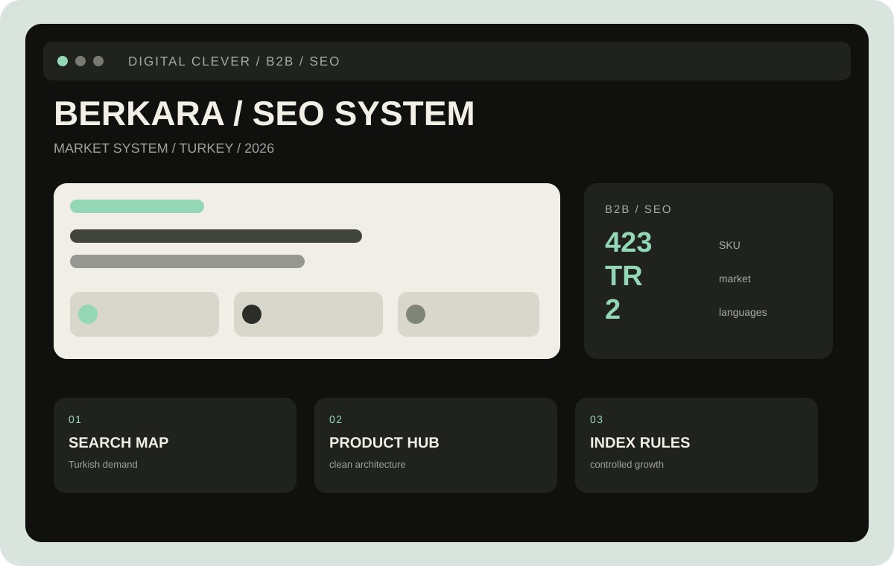

Карта турецкого спроса
Собрали семантические кластеры по категориям, характеристикам и задачам закупки.
Для BERKARA мы собрали SEO-фундамент, который связывает технический продукт, турецкий поиск и реальные сценарии закупки.
Промышленный каталог легко превращается в набор страниц, которые никто не находит.
Нужно было создать понятную архитектуру, чтобы каждая позиция работала на видимость и следующий контакт.

B2B · SEO · industrial products · Турция
У производителя было много сильных товарных позиций, но для поисковой системы и нового клиента они не складывались в единую логику. Каталог требовал не косметического редизайна, а новой структуры.
Мы разложили спрос по категориям, параметрам и сценариям применения; заложили правила для карточек, мета-данных, URL, ALT и страниц без коммерческого спроса. Так SEO становится частью продаж, а не отдельным отчётом.
В B2B-каталоге каждая страница должна отвечать на вопрос закупщика: «это подходит под мою задачу?»Решение Digital Clever
Собрали семантические кластеры по категориям, характеристикам и задачам закупки.
Зафиксировали поля, шаблоны и логику карточек, чтобы каталог масштабировался без хаоса.
Разделили страницы для роста, фильтры и технические дубли; задали правила noindex и canonical.
Подготовили структуру, которая помогает перейти от запроса к сравнению и контакту с компанией.
Проект строится как долгосрочная система: сначала фундамент и порядок, затем контентные кластеры и накопление видимости.
Каталог подготовлен к масштабированию.
Структура учитывает турецкие формулировки и коммерческие намерения.
От разрозненных страниц к управляемой системе.
Определяем категории, атрибуты, URL и поля, чтобы новые страницы не ломали систему.
Раскрываем темы, которые важны закупщику, а не просто добавляем тексты ради объёма.
Связываем видимость, поведение на сайте и обращения в одну картину.
Расскажите, сколько товарных позиций и рынков нужно собрать в одну систему. В течение 24 часов отправим предварительный план работ.
Обсудить проект